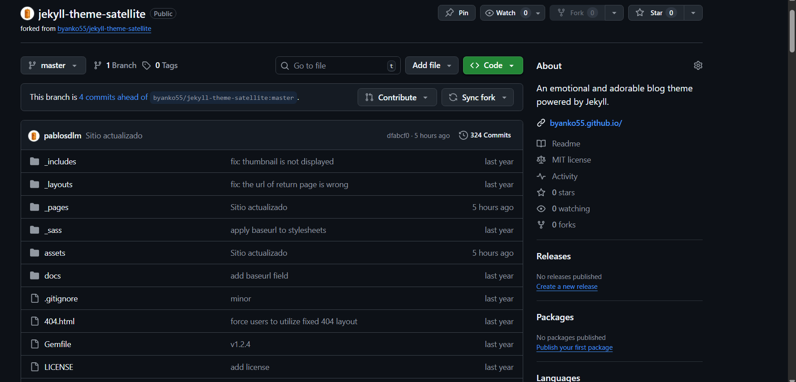
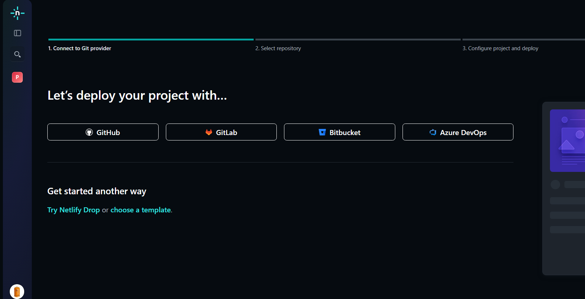
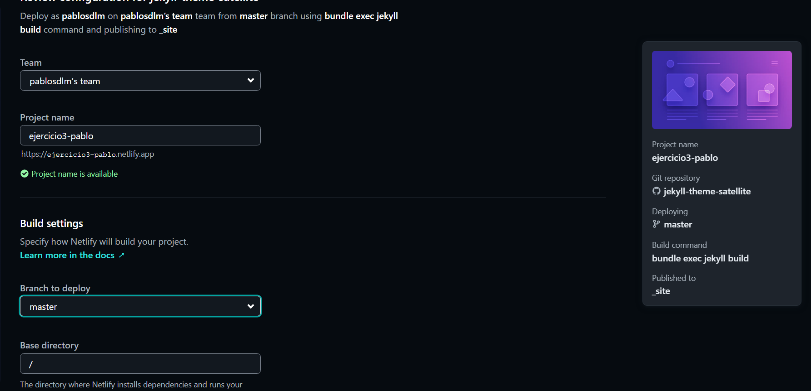
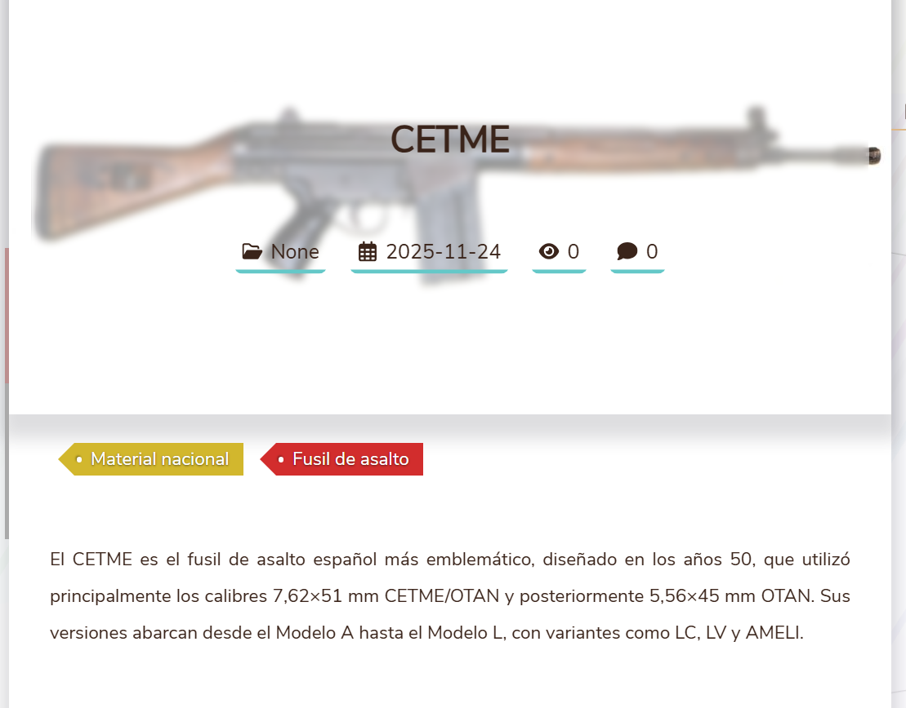

Ejercicio 3: Escoger un tema de Jekyll y despliegue en Netlify
1. Obtener el tema
Para este ejercicio, he escogido el tema Satellite. Para poder usarlo, hay que hacerle un fork desde su propio repositorio y traerlo a nuestra cuenta.

2. Preparación del sitio en Netlify
Para poder desplegar el sitio en Netlify, tenemos que iniciar sesión y darle a añadir un nuevo projecto. Nos preguntará cómo crear desplegar el proyecto, es decir, si queremos usar distintas plataformas para importar el repositorio y usaremos Github, seleccionamos el repositorio del tema al que hemos hecho fork.

Por último, debemos poner un nombre al proyecto que servirá para complementar la URL del sitio y poner un directorio base poniendo una /. En cuanto a la rama, dejamos la que viene por defecto.

3. Configuración del tema (_config.yml)
La configuración del tema contiene los datos que se tienen que mostrar en la página, como el título, el icono o las redes sociales que se muestran como información.
title: armerias.com
description: "Armados hasta los dientes"
logo_img: "/assets/img/logo.png"
profile_img: "/assets/img/logo.png"
# Social Links
email: psainzdelamazar01@educantabria.es
github_username: pablosdlm
twitter_username: twitter
instagram_username: instagram
linkedin_username: linkedin
facebook_username: facebook
4. Posts
Los posts en este tema se encuentran ubicados en el directorio _posts. Estos posts también usan un frontmatter como en los otros temas. Esto son algunos ejemplos:
---
title: "CETME"
tags:
- Material nacional
- Fusil de asalto
date: "2025-11-24"
thumbnail: "/assets/img/thumbnail/cetme-logo.png"
bookmark: true
---
El CETME es el fusil de asalto español más emblemático, diseñado en los años 50, que utilizó principalmente los calibres 7,62×51 mm CETME/OTAN y posteriormente 5,56×45 mm OTAN. Sus versiones abarcan desde el Modelo A hasta el Modelo L, con variantes como LC, LV y AMELI.
- Title funciona para el título
- Tags sirve para clasificar el post.
- Date es la fecha.
- Thumbnail sirve para mostrar una miniatura
4.1 Inclusión de imágenes
Para incluir imágenes dentro del sitio, deben estar colocadas en /assets/img
Ejemplo de post

5. Despliegue del sitio
Para desplegar el sitio en Netlify, hay que tener Git instalado y ejecutar los siguientes comandos:
git add .
git commit
git push origin master
Después de ejecutar estos comandos, Netlify desplegará el sitio ejecutando internamente el comando bundle exec jekyll serve